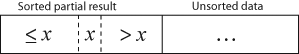
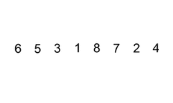

Métodos de ordenamiento
Métodos de ordenamiento
Burbujeo

Código: ord1_Burbuja.c
Requiere archivo: getch.h
Métodos de ordenamiento
Inserción


Inserto de a un elemento en un vector ordenado (como cuando se ordenan cartas).
-

Métodos de ordenamiento
Inserción

Código: ord2_Insercion.c
Requiere archivo: getch.h
Métodos de ordenamiento
Shell
- El Shell sort es una generalización del ordenamiento por inserción:
- El ordenamiento por inserción es eficiente si la entrada está "casi ordenada".
- El ordenamiento por inserción es tipicamente ineficiente por que mueve los valores uno a la vez.
Como el ordenamiento de burbuja o el ordenamiento por inserción, tomará aproximadamente N comparaciones e intercambios para mover cada valor hacia el otro extremo del vector.
Métodos de ordenamiento
Quicksort

Código: ord3_QuickSort.c
Requiere archivo: getch.h
Punteros a funciones
Usos
- Punteros a función
- Implementación de llamadas a función por referencia
Sintaxis:
(*func)(int i, int j)
Código ejemplo:
- ej1_pfunc.c : Selección de funciones usando vector con sus punteros
- ej2_pfunc.c : Pasaje de punteros a función como argumentos
- ej3_alarmas.c : Usando punteros a funcion como un switch/case
Nota: Los ejemplos ej1_pfunc.c y ej3_alarmas.c necesitan getch.h para compilar.